My Favorite Tv Shows
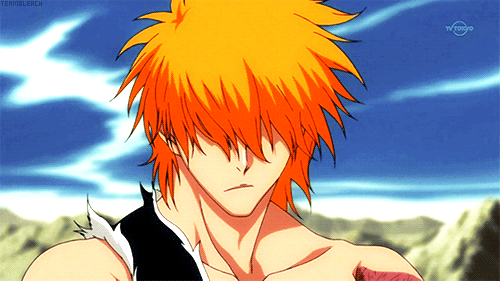
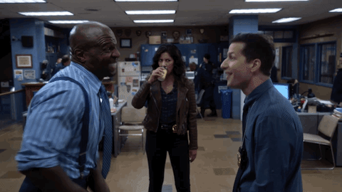
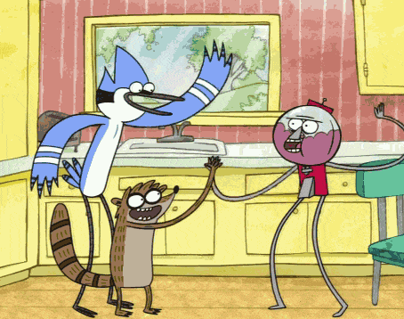
Bleach is a Japanese manga/anime series made by Tite Kubo. It follows the story of Ichigo Kurosaki, a teenager who gains the powers of a Soul Reaper.
Brooklyn Nine-Nine is an American police sitcom that aired on Fox from 2013 to 2021. It follows the adventures of a diverse group of detectives in the 99th precinct of the NYPD.
The Regular Show is an American animated television series that aired on Cartoon Network from 2009 to 2021. It follows the adventures of two friends, Mordicai and Rigby, as they work at a mundane job at a local park.
My Favorite Music Artists
-
Good Morning
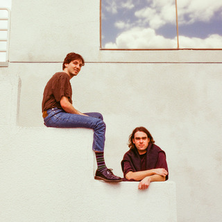
Good Morning is an Australian indie rock duo, the 2 founding members are Stefan Blair and Liam Persons.
-
Sleeping With Sirens
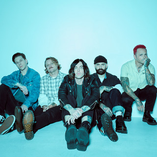
Sleeping With Sirens is an American rock band formed in 2005. They are known for their melodic hardcore sound and have released several successful albums.
Drake
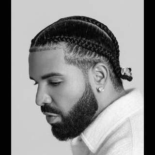
Drake is a Canadian rapper, singer, and songwriter. He is known for his melodic rap style and has released several successful albums, i dont really like his newer stuff but his old stuff is good.
Games
-
Overwatch
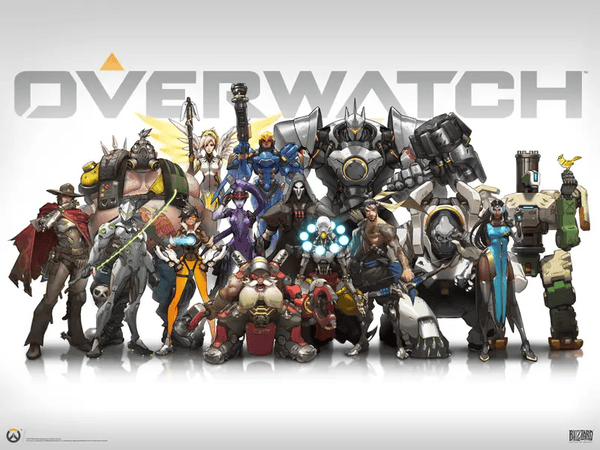
A team-based multiplayer first-person shooter developed and published by Blizzard Entertainment. Players select from a roster of heroes, each with unique abilities, and compete in objective-based game modes(ive also hit masters and peaked grandmaster).
-
DeadLock
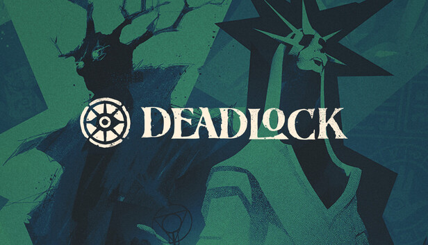
A first-person shooter/MOBA game developed by Valve Corporation, combining elements of both genres with team-based gameplay and strategic objectives.
-
Balatro
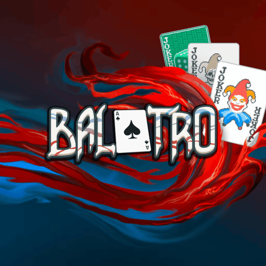
Balatro is a poker-themed roguelike deck-building video game where players use illegal poker hands and game-changing Joker cards to beat escalating score thresholds
Food
-
Pizza
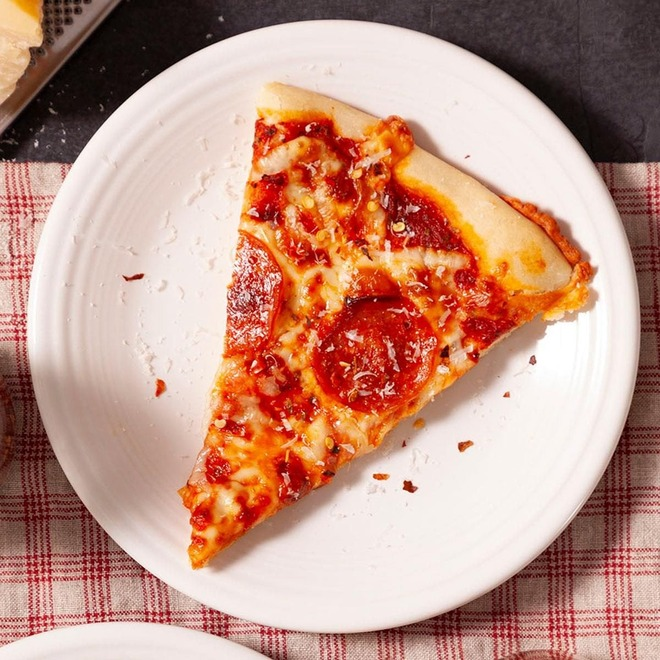
Pizza is a popular Italian dish consisting of a usually round, flat base of leavened wheat-based dough topped with tomatoes, cheese, and various other ingredients.
-
Shwarma
.jpg)
Shwarma is a popular Middle Eastern dish consisting of thinly sliced meat, usually beef, chicken, or lamb, that is marinated, stacked on a vertical rotisserie, and cooked slowly. It is typically served in a flatbread with various toppings and sauces.
-
Pupusas
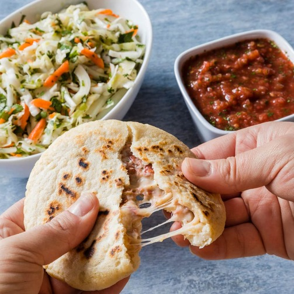
Pupusas are a traditional Salvadoran dish made of a thick corn tortilla stuffed with a variety of fillings such as cheese, beans, or meat.